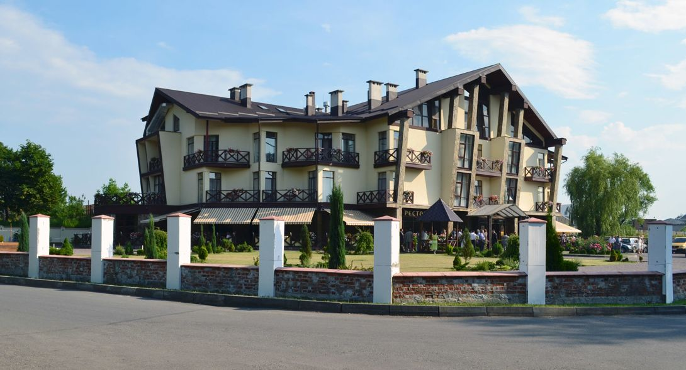
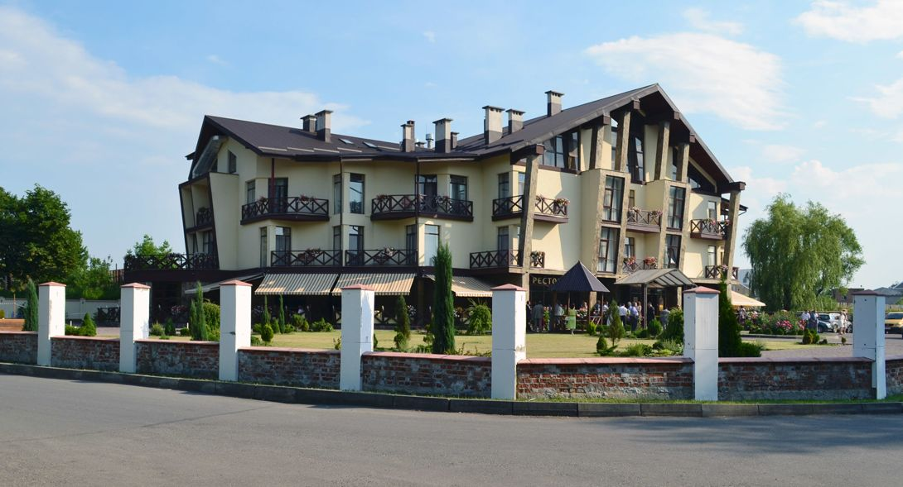
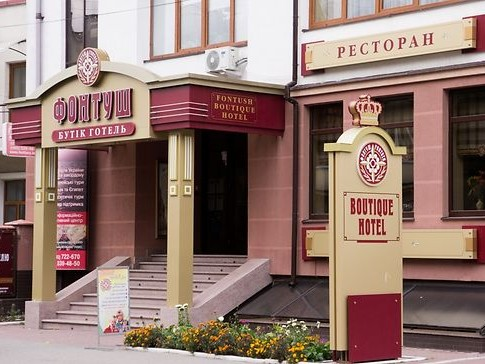
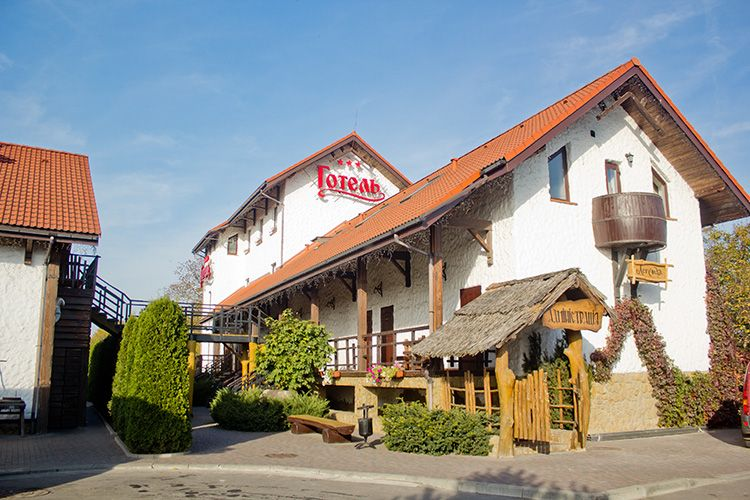
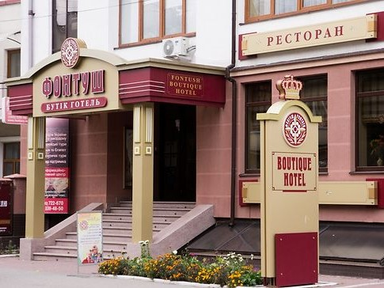
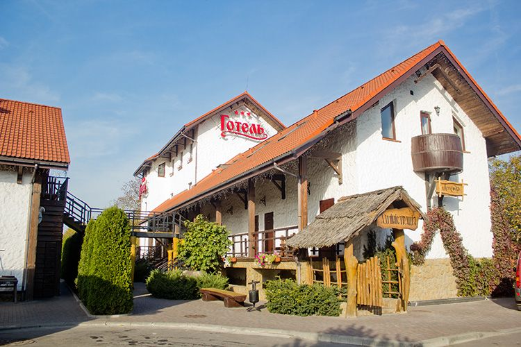

 



Готель Надія
244 номери (380 місць), безкоштовний Wi-Fi, сніданок - шведська лінія
автостоянка на 150 місць (охороняється цілодобово)
5 конференц-залів із сучасним обладнанням
бізнес-центр
ресторан "Надія" - зал "Національний", зал "Європейський", зал "Банкетний", тераса-гриль
кейтеринг - виїзне обслуговування
салон краси "Надія"
продуктовий магазин-кафе "Делікатес"
парфум-бутік "Для
Тебе"
туроператор "Надія" (цікаві екскурсії по місту та області, відпочинок за кордоном)
послуги перекладачів
організація трансферів
прокат авто